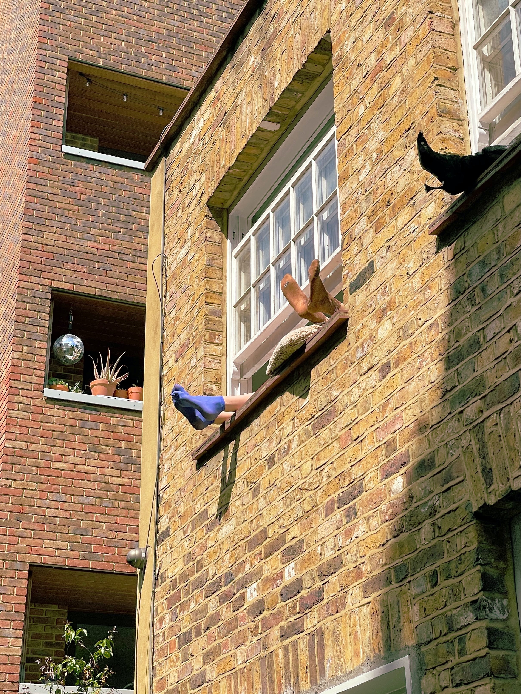

Sensible - shine - shin
Shin Chae Youn

introduce
- 과정을 즐기는 신입 웹퍼블리셔 신채연입니다.
- 작은 일을 완성하여 모두가 만족하는 결과도 스스로는
아쉬움이 있길 바랍니다.
-
만족으로 멈추고 다음 일도 이전만큼 만족하고 넘어가게
된다면 어느 순간 제 스스로는 그 안에서만 멈춰 서서 성장하지
못할 것이란 생각으로, 새로운 아이디어, 컨텐츠, 서비스를
만들어 더 좋은 방향을 찾고 새로운 방식으로 도전하고싶습니다.
- 감각적인 디자인에 대한 관심과 효율적인 시멘틱 웹사이트
구축을 위한 욕심으로 매일 공부하고 매일 나아가는
- 누가봐도 미쳐있는 사람이고 싶습니다.
- 말하지 않고 느낄 수 없어도 항상 내 일을 즐기고 미쳐서
사랑할 수 있는 사람으로 앞으로 더 단단해져서 걸어갈 수
있는 사람이길 바랍니다.
porfile
-
- Name
- Birth
- Address
- Phone
- E-mail
- 신채연
- 1998.02.17
- 서울시 강서구
- 010-9230-9218
- jun291829877@gmail.com
interst
- 여행
- 드라이드
- 사진 촬영
- 음악 감상
- 영화, 문화생활
- 독서
skills
- html5
- css
- javascript
- jQuery
- Zen Codding / EMMET
- sass / scss
- photoshop
- illustrator
licens
-
- 2015
- 2013
- 2013
- 컴퓨터그래픽스운용기능사
- gtq 그래픽기술자격2급
- gtq 일러스트2급
preview
이미지 위에 마우스를 올려보세요
이미지를 클릭해보세요
- 사용언어
- HTML
- SCSS
- Javascript
- 사용기능
- 자바스크립트를 이용한 슬라이드 구성
- css marquee를 이용한 텍스트 흐름
- 기획의도
- 심플하면서 눈에 쉽게 들어오는 다양한 구성에 끌려 클론 사이트로 선정했습니다
- 정적인 이미지들에 transition을 사용하여 시선이 머무르고 페이지를 즐길 수 있도록 수정하였습니다.
- 제작후기
- 첫번째 프로적트라 모르는 것도 많아서 제작기간이 길어졌지만,
- 처음으로 완성시킨 프로젝트라 뿌듯함이 큰 작품입니다.
- 제작 기간은 8일 소요되었습니다.
- 사용기능
- javascript를 이용한 탭 메뉴
- 포토갤러리를 응용한 여러 이미지를 나열
- 슬라이드를 이용한 구성
- 기획의도
- 학원 내에서 각자의 추천 여행지를 선정하여 프로젝트를 진행하였습니다.
- '런던'하면 떠오르는 대표적인 랜드마크를 탭 메뉴로 소개하였고,
- 녹지대가 많기로 유명한 도시인 만큼 런던 공원의 여러 모습을 보여주기 위해 포토갤러리를 응용하였습니다.
- 여러 문화가 섞인 만큼 달마다 진행되는 여러가지의 축제들을 소개해주기 위하여 슬라이드를 구성했습니다.
- 런던 이외의 영국의 대표적인 여행지를 선정하여 탭 메뉴를 활용하여 많은 컨텐츠를 담아도 지루하지 않도록 구성하였습니다.
- 제작후기
- 클론페이지만 작업하다보니 기획부터 구현해야 한다는 것이 처음엔 부담스러웠지만, 평소에 좋아하던 도시의 모습을 소개하는 것이라 보여주고 싶은 모습이 많아 즐겁게 작업하였습니다.
- 탭 메뉴를 구성하는 것을 처음 작업해봐서 여러 페이지를 찾아보며 만들었는데 페이지를 만들고 나니 로직을 이해하게되어 스스로 응용할 수 있게 되어 었습니다.
- 제작기간은 4일 소요되었습니다.
- 사용언어
- HTML
- SCSS
- javascript
- jquery
- 사용기능
- jQuery를 사용하여 스크롤 이벤트 구성
- 기획의도
- 학원 과정에서 가로 스크롤에 관한 수업이 진행되지 않아서, 개인적인 호기심으로 인하여 작업하게 되었습니다.
-
- 제작후기
- 스크롤 이벤크 구문은 처음 사용하여 많은 검색을 하며 제작하였습니다.
- 제작기간은 1일 소요하였습니다
- 제작후기
- 슬라이드 위에 구현되는 애니메이션이 처음엔 어떻게 풀어야하나 난감했지만, 하나씩 풀어가다보니 성취감과 재미를 느끼며 후반부로 갈 수 록 손쉽게 풀어나가는 것에 재미를 느꼈습니다.
- pc 버전을 제작하고 반응형으로 수정해나가며 pc 버전의 디테일도 수정하며 코드가 한결 가벼워질 수 있도록 노력했습니다.
- 기획의도
- 움직이는 신문을 컨셉으로 작업하였습니다.
- 텍스트가 많지 않아서 신문의 느낌이 부족한 것이 아쉽지만,
- 제작후기
- 저에 대해서 소개하고, 제가 만든 페이지를 소개하는 것이 즐거웠습니다.
- 더 많은 이야기를 담고 싶었지만, 페이지의 가독성을 위하여 좀 더 가볍게 만들기 위하여 신경쓰며 작업했습니다.